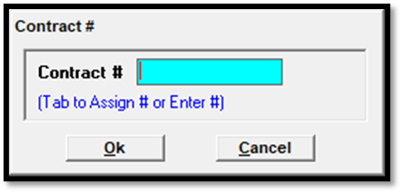
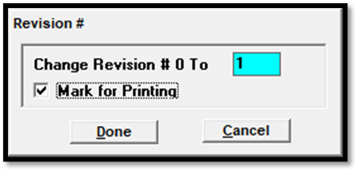

Saving
There are two buttons that are used to save a contract: Save-Stay and Save-Go.
- Save-Stay will remain on the contract after it is saved so that you can review or continue working on it.
- Save-Go will save the contract, and clear it from the screen so that a new one can be entered.
Contract Number Assignment
The contract number is set on the contract number pop up (shown below) when saving a new order for the first time.

To assign the next available number, simply press Tab, then press OK to continue the save process. (The system automatically maintains a record of the next contract number that can be assigned automatically, and increments that number by one each time a new contract is created using an automatically assigned number to prevent duplicate numbers from being used.)
The system also allows you to manually enter a contract number by typing in the number in the contract number pop up. If the number you entered is already in use, a warning message will appear that reads “Number already used, enter a different number”.
After pressing OK on the warning message, press Save-Stay or Save-Go again to bring up the contract number pop up where you can enter a different number (that is also not in use) in order to complete the save process. Alternatively, you can press Tab on the contract number pop up to automatically assign the next available number.
Once a newly entered order l has been saved, the contract number that you entered for that contract cannot be changed.
Warning Messages
When saving, if the order is out of balance, or final logs have been generated for the ordered period, or a mandatory item has not been resolved, a warning message will appear during the save process. In most cases, the conditions that triggered the warning message must be resolved before the save process can be completed.
Credit Limits
If “Cutoff Proposals/Orders when Credit Limit reached” is checked on in Traffic Site Options -> Accounting tab, advertiser/agency credit limits are automatically calculated. When a proposal is set to Approved or an order is entered, the advertiser and agency unbilled amount is adjusted by the amount of the new contract, or the dollar change if a contract revision has occurred (trade dollars are not applied against credit limits). When Final Invoices are generated, the unbilled total is automatically reduced.
If the “Cutoff Proposals/Orders when Credit Limit reached” setting is enabled and an advertiser/agency has exceeded their credit limit, you will receive the following message and will be unable to save the order: “Add/change not allowed as credit limit exceeded” followed by the amount the credit limit was exceeded by. If that setting is not enabled, and the credit limit is exceeded, when saving, a warning message will appear that the credit limit is exceeded, but the contract can still be saved by pressing Yes on the warning message.
Revision Numbers and Mark for Printing
When making a change to an existing contract, the Revision number prompt will appear (shown below).

Internal revision numbers get assigned automatically when an order is revised. The external revision number – shown on the Revision number prompt pictured above – can be manually set if needed by typing in the revision number field, otherwise it gets incremented automatically with each revision.
The “Mark for Printing” checkbox is used with the “Printables Only” feature on the Proposals/Contracts report, which only prints those contracts that have been marked for printing when run.